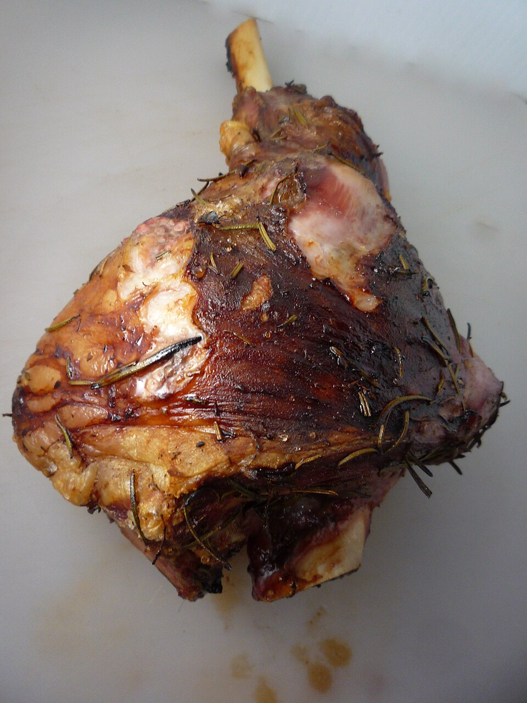

Carnes · Outros
Cordeiro com salsa e alecrim

Ingredientes
- 1 perna de cordeiro ou cabrito desossada (cerca de 1,5 kg)
- 1/2 xícara de salsa picada
- 1 colher (sopa) de alecrim picado
- 250 g de linguiça fresca bem esmigalhada
- sal e pimenta-do-reino a gosto
- 2 colheres (sopa) de óleo
- 2 colheres (sopa) de manteiga
- 2 ramos de alecrim
- 1 xícara de vinho branco seco
- 1 cebola cortada em quatro
- 2 xícaras de caldo de carne
- 3 xícaras de água
Modo de preparo
- Com faca afiada, faça um orifício largo na perna, no lugar do osso, e reserve.
- Misture salsa, alecrim, linguiça, sal e pimenta. Recheie o orifício, costure com linha grossa e fure a carne em vários lugares.
- Numa panela grande, coloque óleo, manteiga, ramos de alecrim e a perna; doure de todos os lados. Junte o vinho e ajuste o sal.
- Acrescente a cebola e o caldo de carne; cozinhe por cerca de 2 horas, virando e regando com água quando o líquido secar.
- Quando estiver macia, retire, fatie, deixe esfriar e congele.
- Na panela do assado, acrescente um pouco de água, raspe o fundo, deixe esfriar e congele o molho à parte.
Observação
Pernil recheado com linguiça dura cerca de 1 mês no freezer; para durar até 6 meses, recheie depois de descongelar. Congelamento: fatias e molho em embalagens separadas. Descongelamento: carne na geladeira; aqueça no forno baixo coberta; molho em fogo brando.